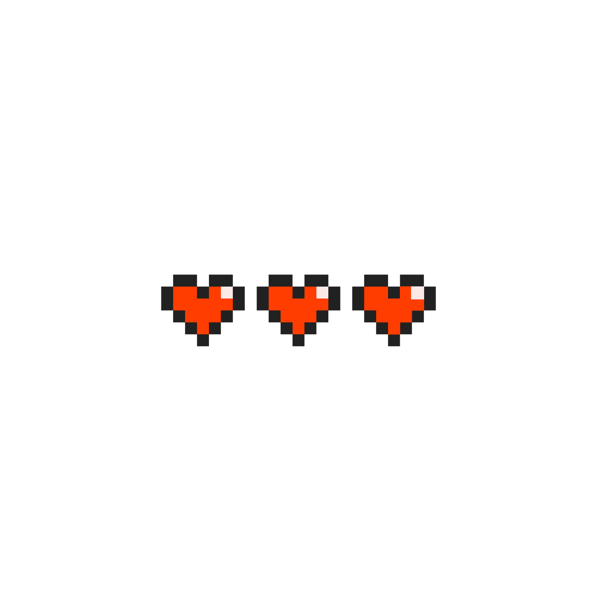

GUIA DE JOGO 01
Cobrinha da tabuada
Leia a conta, encontre o resultado e leve a minhoquinha até ele.
-
01
Mova a minhoquinha
No computador, use as setas ou WASD. No celular, toque nas setas ou deslize no tabuleiro.
-
02
Encontre a resposta
Guie a cabeça até o quadrado com o produto certo antes que o tempo acabe. Evite as outras respostas, as paredes e o próprio corpo.
-
03
Prepare-se para o chefe
No computador, as contas fáceis dão 10 segundos e as mais difíceis, 16. No celular, o movimento é mais lento e você ganha 6 segundos extras por conta. Na luta, você tem três vidas.
O que tem de novo
ATUALIZAÇÃO(26/10)- Modo relaxado automático no celular: movimento mais lento e 6 segundos extras para responder.
- Ajuste no sistema de curvas da cobrinha.
- Agora há sons durante o jogo.
Cobrinha da tabuada
Sua conta
3 × 4 = ?
15 s
Pontos
0
Escolha uma direção para começar e encontre a resposta certa. No celular, toque nas setas.
DEFESA DO ORGANISMO
BioDefense

3 / 3DESAFIO DE MEMÓRIA · FASE 2
Decore a sequência
Observe as luzes e repita a sequência para desativar o escudo.
Prepare-se...
Segure as setas para mover o UFO. Toque na arena para mirar e disparar.
COMUNICAÇÃO DE EMERGÊNCIA
Clique ou toque para disparar. Use as setas ou A/D para mover o UFO.
Mouse/toque: mirar e disparar · Setas ou A/D: mover o UFO · Espaço: disparar para o cursor
MINHOQUINHA